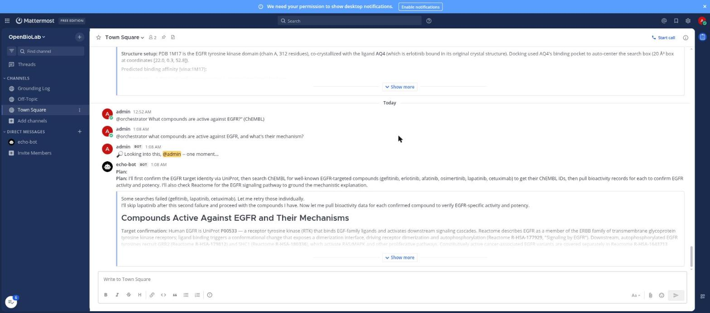
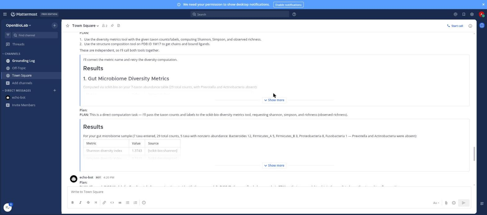
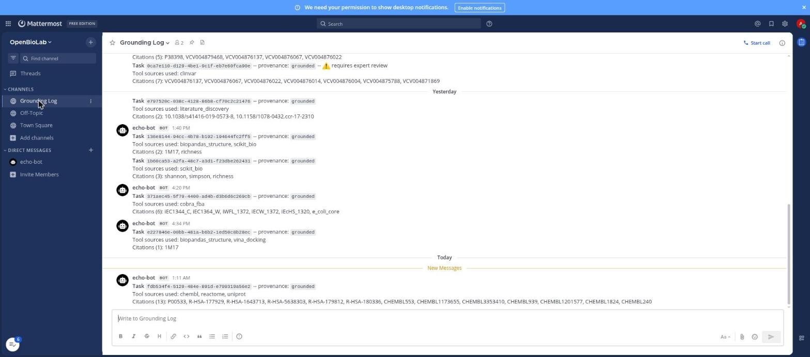

Open Source for Autonomous Discovery
OpenBioLab
An open source agentic orchestrator, connected to every research tool we can wire in.
We believe biosciences can be
accelerated with AI
.
This is our attempt at Applied AI in service of that.

Ask a real research question in chat. Get back a
grounded answer
, with a live tool call behind every claim.

Real local computation, not just lookups.
scikit-bio
runs inside the orchestrator itself.

Every response logged with its tool calls and citations.
Full audit trail
, always.
OpenBioLab
20+
TOOLS LIVE
100+
MORE QUEUED
12
OPEN BRANCHES
MIT licensed. Fork it.